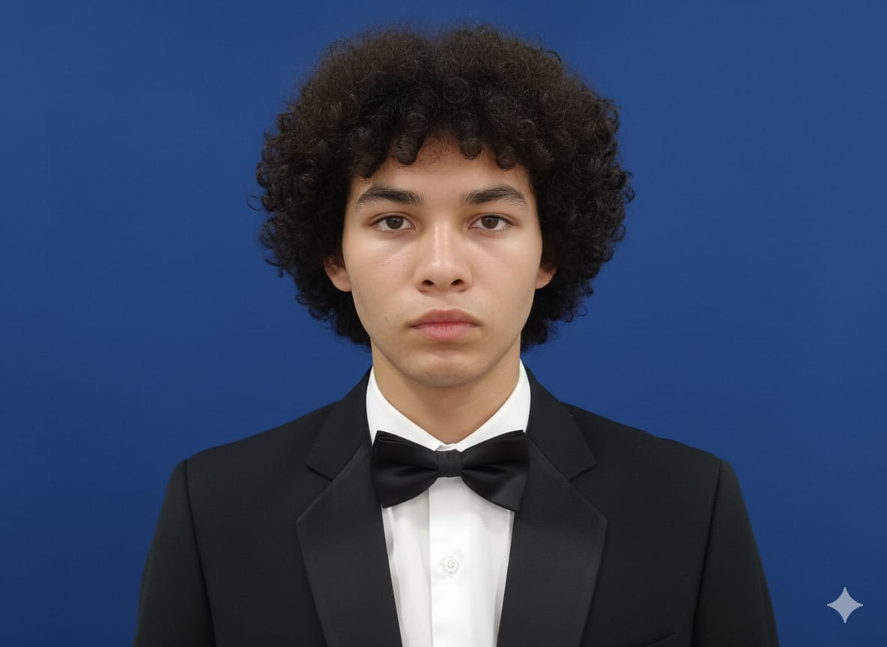

Sobre mi:
Soy una persona en formación en el área de tecnología y desarrollo, con interés en la creación de soluciones digitales y el aprendizaje continuo. Actualmente me encuentro fortaleciendo mis habilidades en programación, diseño web y manejo de herramientas orientadas al análisis y desarrollo de sistemas. Me caracterizo por ser responsable, proactivo y comprometido con cada proceso de aprendizaje, buscando siempre mejorar mis capacidades técnicas y personales. A través de este espacio presento mis proyectos, trabajos académicos y avances, como evidencia de mi crecimiento y dedicación en el ámbito tecnológico. Mi objetivo es seguir desarrollándome como profesional, adquiriendo experiencia y conocimientos que me permitan aportar valor en entornos laborales y enfrentar nuevos retos en el mundo de la tecnología.